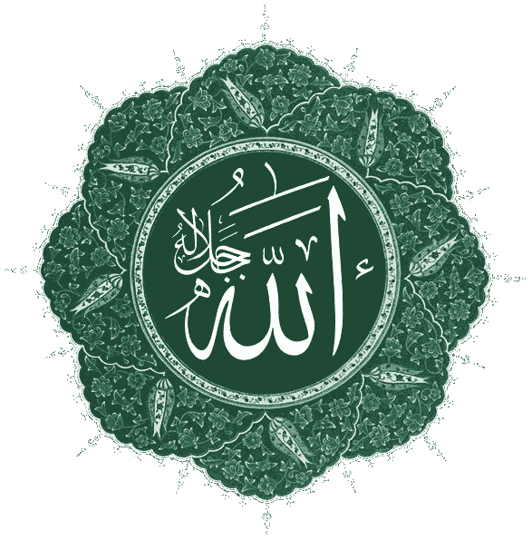

El islam no se presentó como una religión nueva, sino como el regreso a la más antigua: la de Abraham. Para entenderlo, hay que empezar por un nombre que ya conoces.
Durante cinco series hemos seguido a un Dios que cambió de nombre y de rostro: de El, el patriarca cananeo, a Elohim, a YHWH, el Dios único de Israel. En el siglo VII de nuestra era, en la península arábiga, ese mismo linaje divino recibió un nombre más —y con él, una tercera gran tradición—. Esta serie cierra el arco del blog: cómo el islam se entronca en la misma raíz abrahámica que el judaísmo y el cristianismo, y qué comparte con ellos. Empecemos, como siempre, por el nombre.

La palabra Alá (الله) no la inventó el islam. Los estudiosos coinciden en que es, muy probablemente, una contracción del árabe al-ilāh: “el dios”, con el artículo determinado al- antepuesto a ilāh, “dios” o “deidad”. Y aquí está la conexión que recorre todo este blog: ilāh pertenece a la misma raíz semítica que el hebreo eloah / elohim y que el viejo El cananeo con el que empezamos. Alá no es “otro Dios”: es, lingüísticamente, el mismo apelativo semítico para la divinidad, en su forma árabe.
De hecho, Alá es la palabra árabe estándar para “Dios”, y la usan también los judíos y cristianos de habla árabe cuando hablan de Dios. Su asociación exclusiva con el islam se debe a que el árabe es la lengua del Corán, no a que designe una divinidad distinta.
“Alá” significa, sencillamente, “Dios” en árabe. Comparte la misma raíz semítica antigua que el “El” y el “Elohim” con los que empezó este blog. No es un dios diferente con otro nombre: es el mismo apelativo para la divinidad, en otra lengua de la misma familia.
Cuando Mahoma nació (hacia el 570 d.C.), la península arábiga era religiosamente diversa. Convivían tribus politeístas que veneraban numerosas deidades —con la Kaaba de La Meca como santuario de muchos ídolos—, junto a comunidades judías establecidas desde antiguo, cristianas de diversas ramas, y buscadores monoteístas independientes que la tradición llama hanif. El monoteísmo no era ajeno a Arabia: estaba en el aire.
En ese mundo, "Alá" ya era conocido como una divinidad principal —el nombre del propio padre de Mahoma era Abd Allāh, “siervo de Alá”—. Lo que el islam predicará no es la existencia de Alá, sino que Alá es el único Dios, y que todas las demás deidades deben abandonarse. Es, estructuralmente, el mismo paso que Israel dio siglos antes: de un dios entre muchos, al Dios único.
Este es el punto teológico decisivo, y el que da título a la serie. El islam no se concibe a sí mismo como una fe inaugurada por Mahoma. Se presenta como la restauración del monoteísmo original y puro —el de Abraham (Ibrahim)— que, según su relato, judíos y cristianos habrían recibido pero también alterado con el tiempo.
En esta visión, Mahoma no es el fundador de una religión, sino el último de una larga cadena de profetas —el “Sello de los Profetas”— que incluye a Adán, Noé, Abraham, Moisés y Jesús. Todos habrían predicado el mismo mensaje esencial: hay un solo Dios. El Corán, entonces, se ve a sí mismo no como un libro que contradice a la Torá y los Evangelios, sino como su confirmación y corrección definitiva.
Por eso el islam llama a judíos y cristianos “gente del Libro” (ahl al-kitāb): no como extraños, sino como poseedores de una revelación previa del mismo Dios. Toda la serie que aquí empieza explora esa continuidad —y también las divergencias, que son reales y profundas—.
El islam no dice “traigo un Dios nuevo”. Dice “traigo de vuelta al Dios de siempre, el de Abraham, que la humanidad había ido olvidando o distorsionando”. Por eso reconoce a Moisés y a Jesús como profetas, y por eso comparte tantos relatos con la Biblia. Es la tercera rama del mismo árbol.
Empezamos este blog con El, un dios cananeo cuyo nombre significaba, simplemente, “dios”. Lo terminamos —en esta última serie— con Alá, una palabra árabe que significa, exactamente igual, “el Dios”. Entre uno y otro median dos mil años y tres religiones, pero la raíz lingüística y la lógica monoteísta son continuas. El islam es la tercera respuesta a la misma pregunta que ha recorrido todas estas páginas: ¿cómo muchos dioses se volvieron uno?
En las próximas entregas veremos hasta qué punto llega esa continuidad: los profetas compartidos, los relatos bíblicos que reaparecen en el Corán —a veces con giros sorprendentes—, e incluso ecos de aquellos “libros perdidos” de la serie anterior. La familia abrahámica es más entrelazada de lo que suele contarse.
La etimología de Alá como al-ilāh (“el dios”), su raíz semítica común con el/eloah, y su uso por cristianos y judíos arabófonos son consenso académico (Britannica; estudios de lingüística semítica). Las fechas de la vida de Mahoma (c. 570–632), la primera revelación (c. 610) y la Hégira (622) son datos establecidos.
Se evitan aquí teorías especulativas y sin respaldo arqueológico, como la que identificaba a Alá con una antigua “deidad lunar” —rechazada por la erudición por falta de evidencia—. El relato de la revelación se presenta como lo que la tradición islámica sostiene, sin afirmar ni negar su carácter sobrenatural, igual que se ha hecho con las demás tradiciones en este blog.
La cita del Corán se ofrece como paráfrasis del sentido; el texto árabe es intraducible de forma única y las versiones difieren. Este artículo describe historia y continuidad de ideas, con respeto por la fe de los creyentes.